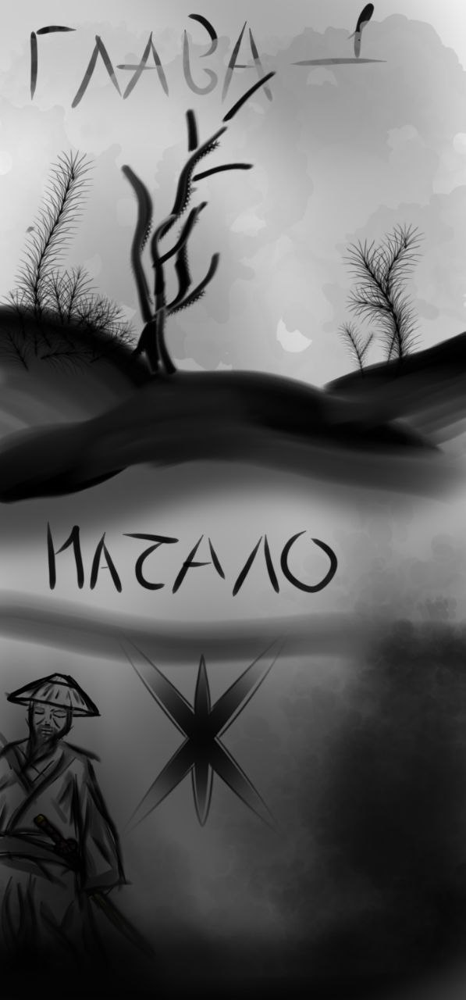

ГЛАВА.1: НАЧАЛО
Мой дед тогда носил титул.СЁГУН.
Он всегда был для меня на первом месте после смерти родителей, они умерли по неизвестной причине...
Поэтому я живу в его додзе
Иногда редко но перед сном, я прошу его рассказать историю. Он начинает мне говорить про "Oni"-демонов.
Я очень внимательно его слушаю , в конце историй он всегда говорит что это правда и они существуют...но я не верил. Поэтому решил проверить,и пошел ночью в лес . Деда в это время не было в додзе. Я шел по темным тропам лес пока не наткнулся на окровавленные следы рваные деревья.... Я услышал в кустах звук режущейся и рвущейся плоти,решил заглянуть туда и попал о огромный шок от увиденного, это Oni ,... Я начал тихо отходить в сторону додзе но он меня заметил залез на дерево и начал между ними прыгать я с ужасом и криком побежал а додзе на пороге стоял дед с той самой катаной которая принесла победу во многих его битвах. Я успел забежать за спину деда он замахнулся катаной демон прыгнул на него с дерева и дед идеально точным взмахом катаны срубил находящемуся в тот момент полёте демону голову... А потом сжёг его останки говоря что их просто так не убьешь... Обязательно надо сжечь ведь они боятся огня и солнца...
ГЛАВА 2 ЗНАКОМСТВО С УБИЙЦЕЙ ДЕМОНОВ.
30лет тому назад начал мне рассказывать дед
-Я пошел в Поход искать миссию со своими лучшими солдатами ..
Мы наткнулись на деревню туманности все жители в ней были бледные а мы уставшие, решили выспаться днём ... А ближе к вечеру начали собираться и продолжать свой путь местные начали нас отговаривать от ночного похода но мы их не слушали , а когда они начали говорить о демонах мы смеялись им в лицо и не верили наступала ночь солнца не было видно.. все жители закрыли ставни на окнах и все разошлись по домам закрывшись и выключив весь свет.. деревня была как будто заброшена а мы решили пойти через лес... Где и случились страшные события....
Мы шли и натыкались на трупы животных порой и людей... А потом нам на встречу вышел гигантский демон с большими когтями и рогами у него торчал язык из пасти на брюхе были шипы но сам он был худой он одним ударом убил 3 моих товарищей остальных проглотил заживо... Мне же он оставил рваные шрамы на груди А потом пришел он тот кто убил этого демона отрезав ему голову облил его сакэ-(алкогольным напитком)и сжёг при помощи огниво и пороха... Меня же он залечил занёс к себе в дом - додзе . И рассказал о себе что его семью и всех убили демони Oni и он решил отомстить и начал охоту на демонов... Он даже своего имени не помнил от ужаса прошлого... Затем он обучил меня повадкам демонов есть гениальные и уроды которые только убивают и жрут ... Я на рассвете отправился обратно в своё додзе попутно убивая демонов уродов, я чудом выжил... К счастью мне не попался гениальный демон так бы меня уже давно не было... Так я и потерял своих солдат и титул СЕГУН...